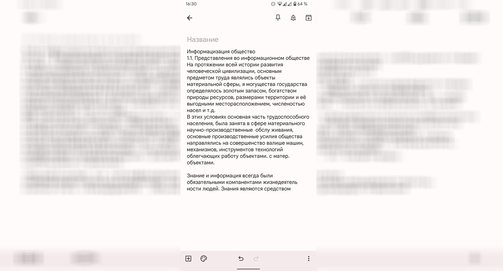

Оглавление
Скан документа JPG > DOC
Из .JPG сделал документ .DOC, с помощью технологии OCR в программе Adobe Acrobat Pro DC.
Исходное изображение формата .JPG.
Создал .PDF файл из .JPG картинки.
Сохранил в виде документа .DOC.
{kind=link}
Отсканирование книги
С помощью фотосканера от Google, отсканировал 2 страницы в книге.

Процесс фотосканирования.
Первый результат фотосканирования.
Второй результат фотосканирования.
Скачать отсканираванную версию страниц
Нажмите на кнопку ниже, чтобы скачать скан из книги формата .JPG
Скачать{kind=link}
Распознование рукописного текста
Через встроенное приложение Google Объектив в андроиде
скопировал текст и вставил в заметки, отсканированный текст можно вставить в любой удобный вам редактор, к
примеру Word от Microsoft, чтобы с компьютера открыть этот файл через облако и продолжить редактирование на
компьютере.
Объектив некоторые буквы не распознал, но если у вас понятный почерк, то все нормально
отсканируется, в моём случае я чутка подредактировал текст, все же быстрее чем перепечатовать. Из всех
программ по OCR лучше всего себя показал объектив, поэтому и рекомендую его использовать :)
Сканирую текст через Google Объектив.

Вставил и немного отредактирован вставленный текст.
Скачать отсканированный текст .DOCX формата
Нажмите на кнопку ниже, чтобы скачать результат отсканирования текста с помощью технологи OCR.
Скачать